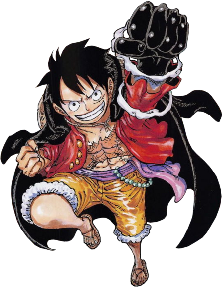

O Plano da Nova Onigashima é o nome de um projeto militar elaborado
por Kaidou que envolve mover a ilha de Onigashima para o continente
principal do País de Wano, oficializando o controle dos Piratas das
Feras e transformando o país em um paraíso sem lei para piratas, a
fim de se opor ao Governo Mundial.[1]
Kaidou planeja mover sua base para a Capital das Flores,
transformar Wano em uma nação pirata renomeada de Nova Onigashima,
e fazer com que seu filho, Yamato, substitua Kurozumi Orochi como
shogun. Todos os cidadãos de Wano, incluindo os da capital, seriam
convertidos em escravos a fim de fornecer mão de obra adicional para a
industrialização do país. Kaidou, junto com Big Mom, também planejam
encontrar as Armas Antigas e o One Piece, iniciando a "guerra final"
contra o Governo Mundial e seu novo poder.[1]
Aliança

Mesmo contra todas as possibilidades, os Bainhas Vermelhas, aliados
ao bando de Luffy, Law e Kid, rumam a Onigashima para impedir os planos de
Kaido. Com a ajuda de todos e uma entrada triunfal de Jinbe no bando dos Chapéu
de Palha, a invasão de Onigashima se inicia e o embate logo se iniciará. Luffy
se prepara para enfrentar Kaido, encontrando no caminho novos aliados, como Yamato,
filho do vilão. O combate final entre esses dois piratas está cada vez mais próximo.